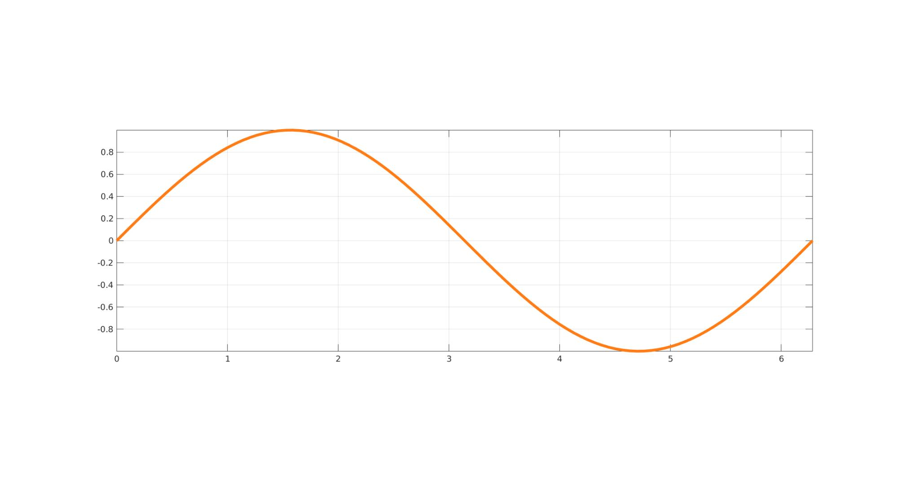
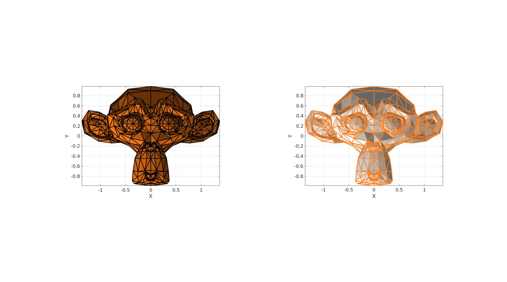

orange
Below is a demonstration of the features of the orange function
Contents
clear; close all; clc;
Syntax
[c]=orange; [c]=orange(m);
Description
This function outputs the rgb color values (between 0 and 1) for an orange color, i.e. [255 123 21]/255 If the optional output m is provided it is used to copy the color m times, such than an mX3 array is returned.
Examples
Plot settings
fontSize=15; lineWidth=5;
Example 1: Access the orange color
c=orange
c =
1.0000 0.4824 0.0824
Example 2: Request multiple copies
c=orange(12)
c =
1.0000 0.4824 0.0824
1.0000 0.4824 0.0824
1.0000 0.4824 0.0824
1.0000 0.4824 0.0824
1.0000 0.4824 0.0824
1.0000 0.4824 0.0824
1.0000 0.4824 0.0824
1.0000 0.4824 0.0824
1.0000 0.4824 0.0824
1.0000 0.4824 0.0824
1.0000 0.4824 0.0824
1.0000 0.4824 0.0824
Example 3: Example use for plotting
% Example graph data
t=linspace(0,2*pi);
y=sin(t);
Plotting an orange line
cFigure; plot(t,y,'-','Color',orange,'LineWidth',lineWidth); axis tight; axis equal; grid on; box on; set(gca,'FontSize',fontSize) drawnow;
Example 4: Example use with gpatch
With gpatch the orange color has also been added using the 'o' flag.
% Example patch data
[F,V]=graphicsModels(12);
Visualizing surfaces using the orange color
cFigure; subplot(1,2,1); gpatch(F,V,'o','k',1,2); axisGeom(gca,fontSize); camlight headlight; view(2); subplot(1,2,2); gpatch(F,V,'w','o',1,2); %Orange edges axisGeom(gca,fontSize); camlight headlight; view(2); gdrawnow;

GIBBON www.gibboncode.org
Kevin Mattheus Moerman, gibbon.toolbox@gmail.com
GIBBON footer text
License: https://github.com/gibbonCode/GIBBON/blob/master/LICENSE
GIBBON: The Geometry and Image-based Bioengineering add-On. A toolbox for image segmentation, image-based modeling, meshing, and finite element analysis.
Copyright (C) 2006-2023 Kevin Mattheus Moerman and the GIBBON contributors
This program is free software: you can redistribute it and/or modify it under the terms of the GNU General Public License as published by the Free Software Foundation, either version 3 of the License, or (at your option) any later version.
This program is distributed in the hope that it will be useful, but WITHOUT ANY WARRANTY; without even the implied warranty of MERCHANTABILITY or FITNESS FOR A PARTICULAR PURPOSE. See the GNU General Public License for more details.
You should have received a copy of the GNU General Public License along with this program. If not, see http://www.gnu.org/licenses/.